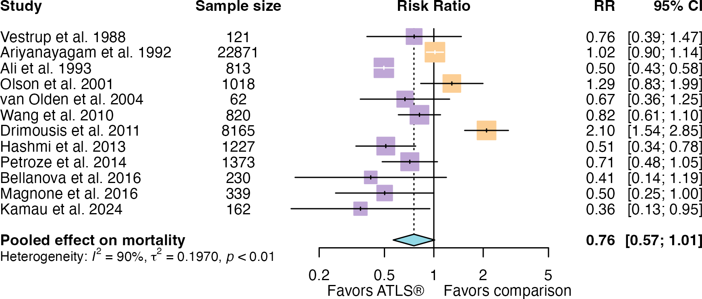
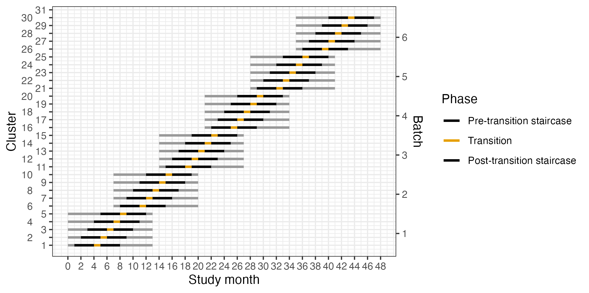
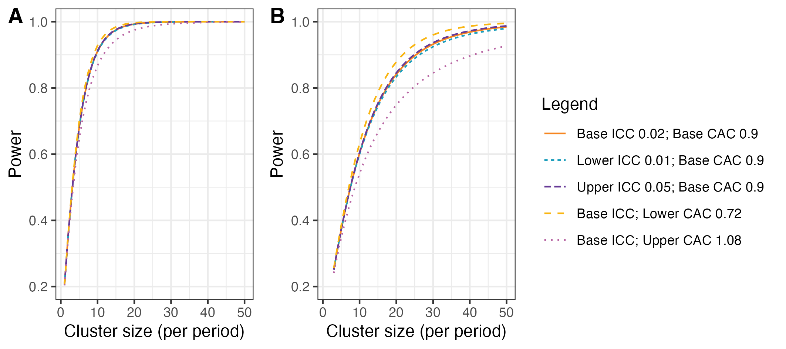
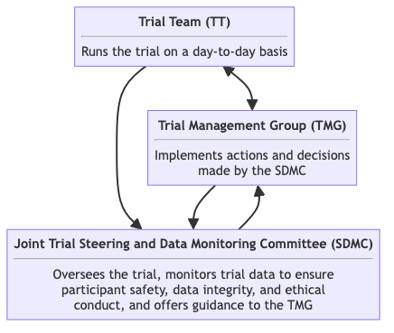

Effects of Advanced Trauma Life Support® Training Compared to Standard Care on Adult Trauma Patient Outcomes: A Cluster Randomised Trial
Clinical Trial Protocol
Version 1.0.0, 2024-03-28
1 Changelog
After version 1.0.0 is approved, all major and minor version updates to the protocol will be documented here. A full changelog will also be kept separately, that documents all “patch” updates as well (for example spelling and grammar edits).
2 Synopsis
Title Effects of Advanced Trauma Life Support® Training Compared to Standard Care on Adult Trauma Patient Outcomes: A Cluster Randomised Trial
Rationale Trauma is a massive global health issue. Many training programmes have been developed to help physicians in the initial management of trauma patients. Among these programmes, Advanced Trauma Life Support® (ATLS®) is the most popular, having trained over one million physicians worldwide. Despite its widespread use, there are no controlled trials showing that ATLS® improves patient outcomes. Multiple systematic reviews emphasise the need for such trials.
Aim To compare the effects of ATLS® training with standard care on outcomes in adult trauma patients.
Primary Outcome All-cause mortality within 30 days of arrival at the emergency department.
Trial Design Batched stepped-wedge cluster randomised trial in India.
Trial Population Adult trauma patients presenting to the emergency department of a participating hospital.
Sample Size 30 clusters and 4320 patients.
Eligibility Criteria
Hospitals are secondary or tertiary hospitals in India that admit or refer/transfer for admission at least 400 patients with trauma per year.
Clusters are one or more units of physicians providing initial trauma care in the emergency department of tertiary hospitals in India.
Patients participants are adult trauma patients who presents to the emergency department of participating hospitals and are admitted or transferred for admission.
Intervention The intervention will be ATLS® training, a proprietary 2.5 day course teaching a standardised approach to trauma patient care using the concepts of a primary and secondary survey. Physicians will be trained in an accredited ATLS® training facility in India.
Ethical Considerations We will use an opt-out consent approach for collection of routinely recorded data. We will obtain informed consent for collection of non-routinely recorded data, such as quality of life and disability outcomes. Patients who are unconscious or lack a legally authorized representative will be included under a waiver of informed consent. Note that consent here refers to consent to data collection.
Trial Period October 1, 2024, to September 30, 2029
3 Background and rationale
Each year, 4.3 million people die from trauma1. Among people aged 10-24 and 25-49 years trauma is the largest cause of disability adjusted life years2. Most deaths from trauma occur within the first 24-48 hours3. Traumatic brain injury and exsanguination are the most common causes of trauma deaths4,5. Most preventable trauma deaths are caused by clinical judgement errors during initial resuscitation or early care including airway management and haemorrhage control, even though the deaths occur later during the hospital stay4,6.
Several trauma life support training programmes have been developed to improve the early management of patients in the hospital by providing a structured framework for assessment and treatment7–10. The proprietary Advanced Trauma Life Support® (ATLS®) is the most established trauma life support training programme and more than one million physicians in over 80 countries have been trained in the programme since the first course in 197811. In the US and many other countries training in ATLS® is virtually mandatory for trauma care physicians12. Uptake in low- and middle income countries (LMIC) has been slow, potentially due to high costs9.
There are three randomised controlled studies showing that ATLS® improves knowledge and clinical skills13–15, but there are no randomised controlled trials or high-quality quasi-experimental trials indicating that ATLS® improves patient outcomes7,8,10. We conducted an updated systematic review for project (unpublished), and estimated a pooled risk ratio of 0.82 (95% CI 0.60; 1.11) from ten heterogeneous (I2 0.91) retrospective or small studies on the effect of ATLS on mortality (see Figure 1)16–25. No study assessed functional outcomes.
We conducted a pilot cluster randomised controlled trial (ClinicalTrials.gov NCT05417243) that we conducted between April 2022 and February 2023 as part of our network grant to assess the feasibility of a full scale trial. We published the protocol for this pilot study26. Our pilot study enrolled 376 patients from seven hospitals across India (unpublished data) and shows that it is feasible to conduct the proposed trial with a high percentage of patients consenting to out of hospital follow up (78%), low loss to follow-up rate (1%), and low missingness in key variables (mean 0.8%).
To involve patients and the public in the planning of this trial we conducted 19 semi-structured interviews with trauma patients, caregivers, and community representatives (unpublished data). The aim of these interviews was to understand their views on the trial and important outcomes and the interviews showed high acceptability of our research and emphasised the importance of better recovery before discharge and functional outcomes at and after discharge, including pain, mobility and self-care activities. The interviews also highlighted return to work as an important outcome.
3.1 Updated systematic review
We performed a systematic literature search in the Medline, Embase, Cochrane, Web of Science, CINAHL and Google Scholar databases (PROSPERO ID CRD42022373977). The last search was conducted on November 11, 2022. We developed the search strategy in Medline (Ovid) in collaboration with librarians at the Karolinska Institutet University Library. We limited the search to English language articles, searched all databases from inception, and screened a total of 7896 records. We used a random effects model to pool estimates across studies.
4 Benefit-risk evaluation
The direct risks includes integrity violations and data leakage. We will mitigate these risks by employing rigorous data collection and storage mechanisms. The procedures that we will use to collect data will be direct observation of care, routine physical examinations, questionnaires, and extraction of already collected data from patient records, which are often seen as involving only minimal risk.
The long-term risks of the research and the risk that the research will be used in detrimental ways are minimal. Our trial will assess the effect of Advanced Trauma Life Support® (ATLS®) on patient outcomes. Training in ATLS® is standard in many health care systems and it is unlikely that training physicians in this programme induces any harm to participants.
We consider these risks weighed up by the potential direct benefit for the participants in the intervention phase, if ATLS® is found to improve patient outcomes, and by the potential for improved care for the trauma patient population.
5 Trial aim
To compare the effects of ATLS® training with standard care on outcomes in adult trauma patients.
6 Regulatory approvals and trial registration
We will submit this trial to the Health Ministry Screening Committee at the Indian Council for Medical Research for their approval. We will apply for ethical approvals from each participating hospital, The George Institute for Global Health in India and the Swedish Ethical Review Authority. We will register this trial with Clinical Trials Registry-India and ClinicalTrials.gov.
7 Trial design and procedures
7.1 Overall trial design
We will conduct a batched stepped-wedge cluster randomised controlled trial (see Figure 2). The stepped-wedge trial is a uni-directional cross-over trial but the time point when clusters cross-over from standard care to the intervention is randomised27. Each cluster will be at least one unit of physicians performing initial resuscitation of trauma patients in the emergency department of tertiary hospitals in India. The number of units that we will train in each hospital will depend on the sizes of these units and the volumes of patients that they see. If more than one unit is trained in the same hospital these units will be considered one unit for the purpose of randomization. We choose this approach for two reasons: 1) it will not be logistically or financially feasible to train all physician in a given hospital; and 2) we need to balance cluster size with the number of clusters. We will conduct this trial in India because physicians providing initial trauma care in India are so far not routinely trained in ATLS® or similar programmes.
We will roll out the interventions to 30 clusters over six batches, so there will be five clusters in each batch. The clusters in each batch will be randomised to one of five implementation sequences, with one hospital randomised to each implementation sequence. All clusters will transition through three phases, first a standard care phase, then a one month transition phase during which the training is delivered, and finally an intervention phase, for a total of 13 months. The implementation sequence determines how long the phases of standard care and intervention are. Patient participants will be followed up for a total of three months.
7.2 Design justification
We use the cluster randomised design because the intervention cannot be randomised at the individual patient level. We use the stepped-wedge design for two reasons. First, this design is statistically more efficient than the parallel cluster design when the number of clusters is limited28. In this trial, the number of clusters is limited because of the costs associated with ATLS® training and the available slots for ATLS® training in India. Second, the stepped-wedge design is likely to enhance participation and engagement because all clusters receive the intervention. The batched stepped-wedge design further improves feasibility as it does not require all clusters to start at the same time, and it is robust to potential delays in cluster recruitment29.

7.3 Eligibility criteria
Our trial include eligibility criteria on three levels: hospitals, clusters and patient participants. We include eligibility on both the hospital and cluster level to facilitate the screening process.
7.4 Hospital selection
Hospitals will be secondary or tertiary hospitals providing trauma care in India. Hospital will be the unit of randomisation.
7.4.1 Inclusions criteria
Hospitals must meet the following criteria:
- admit or refer/transfer for admission at least 400 patients with trauma per year or 35 patients with trauma per month for at least the last six months;
- provide surgical and orthopaedic emergency services around the clock; and
- have at most 25% of physicians providing initial trauma care trained in a formalised trauma life support training programme, like ATLS® or Primary Trauma Care (PTC).
7.4.2 Exclusion criteria
Hospitals are excluded if they meet any of the following criteria:
7.4.3 Screening
The trial management group will compile a list of hospitals with potentially eligible clusters and reach out to them to assess their interest in participating in the trial. We will then screen hospitals for eligibility based on the criteria above, using a two-step procedure. First, we will approach hospitals to complete an initial hospital screening instrument (see Appendix Section 19.1). We will then discuss each eligible hospital individually in the Trial Management Group before deciding whether to include it in the trial. We have this discussion because we strive to include hospitals that to a large extent conducts primary resuscitation of trauma patients, rather than hospitals that primarily receives transferred patients from other hospitals, but this is difficult to formalise in the eligibility criteria. We will then perform a more in-depth interview with selected hospitals (See Appendix Section 19.2). To avoid excluding centres we will also discuss plans to implement other potentially competing interventions during the trial period, and take these plans into account when assigning clusters to batches. For example, we are aware of the ongoing implementation of the National Emergency Life Support (NELS) programme in India, and will therefore not include hospitals that plan to implement this programme during the trial period. All screening steps and decisions will be logged using REDCap30,31.
7.5 Cluster selection
Clusters are one or more units of physicians providing initial trauma care in the emergency department of secondary or tertiary hospitals in India. These units already exist in the hospitals and rotate through the emergency department on specific days of the week.
7.5.1 Inclusion criteria
Clusters must meet the following criteria:
- admits or refers/transfers for admission at least 12 patients with trauma per month for at least the last six months; and
- no more than 25% of physicians providing initial trauma care trained in a formalised trauma life support training programme.
7.5.2 Screening
The screening of clusters is part of the hospital screening process.
7.6 Patient participants selection
Patient participants are adult trauma patients who presents to the emergency department of participating hospitals and are admitted or transferred for admission.
7.6.1 Inclusion criteria
Patients participants must meet the following criteria:
- age of at least 15 years;
- trauma occurred less than 48 hours before arrival at the hospital;
- present to the emergency department of participating hospitals, with a history of trauma defined as having any of the reasons listed in the International Classification of Diseases chapter XX as the reason for presenting;
- admitted, or died between arrival at the hospital and admission, or referred/transferred from the emergency department of a participating hospital to another hospital for admission; and
- managed by a participating cluster in the emergency department.
7.6.2 Exclusion criteria
Patients participants are excluded if they meet the following criteria:
- present with isolated limb injuries; or
- are directly admitted to a ward without being seen by a physician in the emergency department.
7.6.3 Screening
Clinical research coordinators will screen patient participants either as they arrive to the emergency department or using emergency department registers. The patients or their representatives will receive written information about the study before they are discharged, including about their right to opt out at any time before final analysis. Phone numbers for out of hospital follow up will be extracted from the emergency department registers, and will be securely held only by the clinical research coordinators at each sites.
7.6.4 Withdrawal criteria
Patient participants can choose to withdraw their consent for collection of non-routinely recorded data at any time before the final analysis. If they withdraw their consent for this data collection the clinical research coordinator will not collect any more of this data, which also means that no further follow-ups will be conducted. They can also choose to have the data already collected about them removed from the trial at any time before final analysis of the data. Withdrawal of consent or removal of data from the trial will not affect their care in any way. If the patient participant withdraws consent, follow-up of this participant will be performed according to the participating hospitals routine.
7.7 Procedures
Table 1 shows an overview of trial procedures. Clinical research coordinators will follow up patients daily until discharge to capture injury information. They will also follow up patients at 24 hours, 30 days and 90 days after arrival to the emergency department to capture mortality outcomes, and at 30 days and 90 days after arrival to the emergency department to capture functional outcomes and return to work. If patient participants are discharged before any of these follow-up time points, clinical research coordinators will follow up patients by phone.
| Procedure | Screening | Follow up | |||
|---|---|---|---|---|---|
| Discharge | Within 7 days of discharge | 30 days | 90 days | ||
| Eligibility criteria | √ | ||||
| Study information1 | √ | ||||
| Informed consent1 | √ | ||||
| Baseline data collection | √ | ||||
| ED data collection2 | √ | ||||
| Hospital data collection | √ | ||||
| Surgery data collection3 | √ | ||||
| Imaging data collection3 | √ | ||||
| Transfusion data collection3 | √ | ||||
| Injury data collection3 | √ | ||||
| Mortality data collection3 | √ | √ | √ | √ | |
| Assessment of safety events3 | √ | ||||
| EQ-5D/WHODAS | √ | √ | √ | ||
| Return to work | √ | √ | |||
| End of study | √ | ||||
| 1 Clinical research coordinators will inform patient participants about the study, including that they are free to withdraw their data from the study at any time, and approach them for informed consent for collection of non-routinely recorded data in person or telephonically. | |||||
| 2 Emergency Department | |||||
| 3 Will be ascertained daily from when the patient participant arrive to hospital until they leave the hospital, are discharged or die. | |||||
7.8 Biological sampling procedures
This trial does not include biological sampling.
7.9 End of trial
The trial ends when the last patient participant has completed the last follow-up. The trial may be prematurely terminated if it this is necessary for safety reasons affecting the risk-benefit balance or if the recruitment of subjects cannot be met within reasonable time limits. If the trial is prematurely terminated or suspended, the investigator should immediately inform the subjects about this and ensure appropriate treatment and follow-up. Decisions on premature termination are taken by the Joint Trial Steering and Data Monitoring Committee and Trial Management Group.
7.10 Intervention and control treatment
The intervention will be ATLS® training. The control will be standard care, meaning no formal trauma life support training. We will train the physicians that initially resuscitate and provide trauma care during the first hour after patient arrival at the emergency department. These physicians can be casualty medical officers, surgical residents, or emergency medicine residents, depending on the setup at each participating centre. The training will occur during the transition phase in each cluster. Our experience from our pilot study is that study sites adhere to the training slot alloted to them through the trial, so we judge the risk of clusters implementing ATLS® before their randomised implementation sequence as very low.
We will train the number units of physicians needed to reach the required patient sample size, but estimate that this will require training an average of ten physicians per hospital, which on average should be mean that we can train one to two units per hospital. This is possible because many hospitals in India organise physicians staffing their emergency departments in units, and the physicians in the same unit work together in the emergency department on the same days of the week. We will therefore collect data only on the days when these units work. The units selected to constitute a cluster from each hospital will be a convenience sample out of all eligible units in those hospitals.
Advanced Trauma Life Support® (ATLS®)11 is a proprietary 2.5 day course teaching a standardised approach to trauma patient care using the concepts of a primary and secondary survey. The programme was developed by the Committee of Trauma of the American College of Surgeons. The course includes intial treatment and resuscitation, triage and interfacility transfers. Leaning is based on practical scenario-driven skill stations, lectures and includes a final performance proficiency evaluation. Physicians will be trained in an accredited ATLS® training facility in India.
Standard care varies across hospitals in India, but trauma patients are initially managed by casualty medical officers, surgical residents, or emergency medicine residents. They are mainly first- or second-year residents who resuscitate patients, perform interventions and refer patients for imaging or other investigations. Compared with other settings where a trauma team approach is adopted, nurses and other healthcare professionals are only involved to a limited extent during the initial management.
7.10.1 Description of investigational medicinal products
This trial does not include any investigational medicinal products.
7.10.2 Auxiliary medicinal products
This trial does not include any auxiliary medicinal products.
7.10.3 Concomitant use of other medications or treatments
Other than implementing another formalised trauma life support training programme or other major interventions to change the care of trauma patients as specified in the exclusion criteria, concomitant use of other medications and treatments may be provided at the discretion of the investigators and will not be considered an exclusion criterion.
7.11 Randomization
We will assign clusters to batches as they are found to be eligible and receive ethical approval. Batches will include clusters from hospitals in different regions to optimize trial logistics. We will randomize the clusters alloted to each batch to the different intervention implementation sequences within that batch3. We will balance the randomization within each batch on cluster size, defined as monthly volume of eligible patient participants, using covariate constrained randomization. The cluster sizes are expected to vary between 12 and 20 patients per month, based on our previous experiences. We will conceal the randomization order for as long as it is logistically possible, considering that arrangements for sending physicians to ATLS® training need to be made in advance.
7.12 Blinding
It is not possible to blind a stepped-wedge trial, because all clusters receive the intervention.
7.13 Treatment after trial end
When the trial ends, the intervention will have been implemented in all clusters.
7.14 Outcomes
7.14.1 Primary outcome
The primary outcome will be all-cause mortality within 30 days of arrival at the emergency department. Clinical research coordinators will extract information on death from patient hospital records, by calling the patient or a patient representative, or if the patient has been transferred to another hospital by contacting the hospital to which the patient was transferred. Data on this outcome will be collected continuously during the trial. We chose this outcome as the primary outcome instead of in-hospital mortality because in-hospital mortality would not capture deaths in patients who are transferred to another hospital for admission.
7.14.2 Secondary outcomes
- All cause mortality within 24 hours and three months of arrival at the emergency department. Data on this outcome will be collected in the same way as for the primary outcome.
- In-hospital mortality within 30 days of arrival at the emergency department. Data on this outcome will be collected in the same way as for the primary outcome.
- Quality of life within seven days of discharge, and at 30 days and three months of arrival at the emergency department, measured by the official and validated translations of the EQ5D3L. Data on this outcome will be collected in person if the patient is still in hospital, or by phone if the patient has been discharged. We will collect this data from a stratified random sample (site and period) of patient participants. The sampling will be designed so that is maximises statistical efficiency.
- Disability within seven days of discharge, and at 30 days and three months of arrival at the emergency department, assessed using the WHO Disability Assessment Schedule 2.0 (WHODAS 2.0). Data on this outcome will be collected in person if the patient is still in hospital, or by phone if the patient has been discharged. This data will also be collected from a stratified random sample of participants.
- Return to work at 30 days and three months after arrival at the emergency department. Data on this outcome will be collected in person if the patient is still in hospital, or by phone if the patient has been discharged.
- Length of emergency department stay. Data on this outcome will be collected from patient hospital records.
- Length of hospital stay. Data on this outcome will be collected from patient hospital records.
- Intensive care unit admission. Data on this outcome will be collected from patient hospital records.
- Length of intensive care unit stay. Data on this outcome will be collected from patient hospital records.
7.15 Handling of adverse and safety events
7.15.1 Definitions
7.15.1.1 Adverse event
Any untoward medical occurrence in a clinical trial subject and, which does not necessarily have a causal relationship with the treatment, can be an unfavorable and unintended sign (including an abnormal laboratory discovery), symptom or disease temporally associated with the inclusion in the trial, whether or not related to the trial.
7.15.1.2 Serious adverse event
Any untoward medical occurrence in a trial participant that:
- leads to death
- is life-threatening
- requires inpatient hospitalization or prolongation of existing hospitalization
- results in persistent or significant disability or incapacity
- results in a congenital anomaly/malformation
7.15.1.3 Safety event
Any unexpected serious complication that might occur as a consequence of the trial and that are not part of the natural history of trauma.
7.15.2 Reporting and assessment of adverse and safety events
In alignment with other current trials including critically ill patients32, we will not collect adverse events or serious adverse events, because many of these events are expected in this patient population and we already collect many of these events, for example mortality, as part of our outcomes.
We will only report safety events, if they are life-threatening, prolong hospitalisation or result in meaningful harm to the participant. We cannot pre-define a comprehensive list of events that can be considered safety events, but will actively assess the presence of the following safety events:
- Prolonged mechanical ventilation (> 7 days)
- Initiation of renal replacement therapy
- Prolonged (> 2 days) or renewed (restart after at least 2 days without) use of vasopressors such as norepinephrine or vasopressin
These events are considered safety events because they suggest pulmonary, renal, septic or bleeding complications and an increase in their occurrence following ATLS® training could indicate that the intervention is harmful. These events therefore need to be tracked during the standard care phase as well as the intervention phase, but will only be considered indicative of harm related to the intervention if they occur more often during the intervention phase than during the standard care phase.
We will also report any other safety events that we identify during the trial, and the reporting of such will have to be based on the intuition of the clinical research coordinators and local investigators. Examples of such safety events could include missed injuries or missed investigations, which could be suspected if certain injuries or investigations were identified or conducted more often during the standard care phase than during the intervention phase.
All safety events will be recorded in the Case Record Form (CRF) and reported to the trial management team within 24 hours of its occurrence. The trial management team will then assess if the event can be considered related to the trial or the intervention within 24 hours of it being reported. Events that are considered probably related will be reported immediately to the Joint Trial Steering and Data Monitoring Committee.
7.15.3 Follow up of safety events
All safety events should be followed up by the local investigator until they are fully evaluated.
7.16 Statistics
7.16.1 General principles
We will conduct all analysis by modified intention to treat. Clusters and observations within clusters will be considered exposed to the intervention after the date at which the cluster was scheduled to transition. All data will be included with the exception of the transition phases. We will not adjust for multiplicity of analyses because none of the secondary outcomes will be singularly more important. However, all secondary outcomes will be interpreted with due consideration for how all are affected by the intervention without putting any undue emphasis on a single outcome that might be statistically significant but where all others appear to have remained unchanged.
We will use a two-sided significance level of 5% and estimate 95% confidence intervals. The primary subgroup analyses will be based on geographical region because demonstrating the consistency of any effect across multiple regions will enhance the generalisibility of the results4. Additional subgroup analyses will include age across the groups older adolescents (15-19 years), young adults (20-24 years), adults (25-59 years), and older adults (60 years and older)33; sex; and the clinical cohorts blunt multisytem trauma, penetrating trauma, and severe isolated traumatic brain injury.
7.16.2 Analysis models
There are a number of requirements for the analysis model. Firstly, all analysis will consider the clustered nature of the design. Secondly, as the trial has only 30 clusters, it will be essential that the model allows for a correction due to the small number of clusters. Thirdly, as the design is a stepped-wedge study, we will adjust for temporal confounding using categorical effects for period of the study (month). Full details on how each of these will be undertaken, with justification is provided below34.
For binary outcomes, a mixed effects binomial regression with a logit link will be used to estimate the odds ratio; and a binomial model with identity link used to estimate the risk difference. These models will be fitted using residual pseudo-likelihood estimation based on linearization with subject-specific expansion (RSPL). If the binomial model with the identity link does not converge then only a odds ratio will be reported.
We will include fixed effects for period and a fixed effect for intervention exposure. The primary analysis will allow for clustering by as a random cluster and random cluster by period effect. To correct the potential inflation of the type I error rate due to small number of clusters, the Kenward and Roger small sample correction will be used. In a sensitivity analysis we will explore if models with more complicated correlation structures are a better fit to the data. These models are not being used as our primary analysis models as there is limited understanding as to when such models will converge and how to choose between the various different correlation structures which might be plausible.
To this end we will additionally fit generalised linear mixed models (with same link functions and fixed effects as described above) to include a discrete time decay correlation structure including a random cluster effect with auto-regressive structure (AR(1)). To allow for the randomisation by batches, a different secular trend will be included for each batch (interaction between batch and period). For continuous, count and prevalence outcomes similar model-based approaches will be used but with appropriate links and distribution functions, using transformations where appropriate.
7.16.3 Additional sensitivity analyses
To additionally explore if the fixed period effect is both parsimonious and adequate to represent the extent of any underlying secular trend, we will model the time effect using a spline function. Models will also be extended to include random cluster by intervention effects (with a non-zero covariance term) to examine if results are sensitive to the assumption of no intervention by cluster interaction. Models will also be extended to include an interaction between treatment and number of periods since first treated, to examine if there is any indication of a relationship between duration of exposure to the intervention and outcomes.
This will allow us to different lag effects (whereby it takes time for the intervention to become embedded within the culture before its impact can properly start to be realised); as well as waning effects (whereby the effect of the intervention starts to decrease – or fade). This type of analysis attempts to disentangle how some clusters end up having a long exposure to the intervention and others have a much shorter exposure time. A fully adjusted covariate analysis will additionally adjust for a set of pre-specified individual-level covariates of known prognostic importance.
7.16.4 Estimation and reporting of within cluster correlations
We will report time adjusted within-cluster correlations for all outcomes with 95% confidence intervals. We will report correlations from the different assumed correlation structures (so we will report intra-cluster correlations (ICC); within and between-period correlations; and within-period correlations and exponential decay). As well as reporting correlations we will additionally report all variance components. For all outcomes we will report correlations on the latent scale (i.e. proportions scale for binary outcomes) as is appropriate to inform future sample size calculations.
7.16.5 Sample size calculations
With 30 clusters and a total sample size of 4320 our study has ~90% power across different combinations of cluster autocorrelations (CAC) and intra-cluster correlations (ICC) to detect a reduction in the primary outcome from 20% under standard care to 15% after ATLS® training (see Figure 3). This effect is a conservative estimate and the reduction equals a risk ratio of 0.75, which would be clinically important while also being consistent with our pilot study and updated systematic review. We allowed for the clustered design and assumed an ICC of 0.02, but considered sensitivity across the range 0.01-0.0535,36, and a CAC of 0.9 but considered sensitivity across the range 0.8-1.0, based on our pilot study and current guidance37–39. We included the CAC to allow for variation in clustering over time. We assume that each cluster will contribute approximately 12 observations per month to the analysis, based on our previous work.

7.16.6 Interim analysis
There will be one interim analyses after half of the batches have completed the trial. The interim analyses will be assessed by the Joint Trial Steering and Data Monitoring Committee. The purposes of this interim analysis will be to:
- assess the trial’s feasibility and recommend stopping the trial if the trial is not feasible, for example if hospitals fail to adhere to the randomisation schedule or if there are substantial missing data in outcomes;
- assess if sample size calculations should be revised, primarily by increasing the number of clusters to be included; and
- compare characteristics across intervention conditions to monitor for differential recruitment/ascertainment between intervention and control.
7.17 Quality control and quality assurance
The George Institute for Global Health - India will ensure proper conduct of the trial through quality control measures including on-site training of personnel, standard operating procedures, ongoing quality metrics assessment, review of missing data and outliers, and round-the-clock availability of coordinating center personnel and Principal Investigators. The trial will strictly follow ICH GCP principles, Indian regulations, and George Institute procedures. The trial operations staff from the George Institute India will train local investigators, and trial site staff, before the trial, with continuous documentation in the site master file. All documentation will be stored securely and retained according to regulatory requirements.
7.18 Quality assurance and oversight
The Trial Management Group and Trial Team, comprising key project leaders and managers, will play a pivotal role in ensuring the highest standards of quality assurance and effective sponsor oversight throughout the trial. These groups will be responsible for facilitating consistent communication, maintaining fidelity in study implementation, and overseeing the quality of data collection.
To achieve these objectives, the groups will implement a comprehensive communication plan and provide extensive training to site personnel. The training will cover not only the study protocol but also practical aspects of various systems, supplemented by both written and electronic materials designed to educate study and clinical emergency staff.
The trial’s quality assurance systems will be meticulously designed based on a thorough risk analysis. A key component of our quality assurance strategy will include the development and implementation of detailed operational manuals and regular meetings. These tools and interactions will ensure that all trial personnel will be used to uphold the trial’s quality standards.
Central to our oversight approach will be a comprehensive monitoring and auditing plan. This plan will be tailored based on the identified risks associated with the trial. Through these comprehensive measures, the trial management group, in conjunction with the hospital staff, will ensure that the trial is conducted with the utmost rigor, adhering to the highest standards of quality assurance and effective sponsor oversight.
7.19 Monitoring
We will implement a multi-tiered monitoring strategy, including centralized data consistency checks, statistical monitoring, and selective on-site evaluations. Key integrity measures include source data verification, data entry validation, and regular audits. Any protocol deviations will be thoroughly documented, with serious breaches promptly addressed to ensure data integrity. Monitors from coordinating centres will assist investigators in maintaining high ethical, scientific, technical, and regulatory quality. Monitoring visits will review protocol adherence, participant recruitment, adverse event reporting, compliance with study procedures, and regulatory adherence. Regular remote monitoring of the web-based database will be conducted to ensure data integrity, using validation and consistency rules and regular data cleaning. The Trial Team and Trial Management Group will monitor baseline characteristics, opt-in consent rates and differential opt-in consent rates across trial arms, follow-up rates, CRF return and completeness rates, and safety data.
8 Deviations, serious breaches and other reporting obligations
The responsible investigator shall, without delay, report to the sponsor any serious breaches and deviations from the trial protocol, ICH-GCP and other regulations that significantly and directly affect, or with high likelihood could affect, the subjects’ safety and integrity or the reliability and robustness of the data generated in the trial. The sponsor should assess the suspected serious breach and the consequences of deviations that have occurred. Minor deviations that do not affect subjects’ integrity or safety, nor significantly affect the trial’s scientific value, are documented in the trial documentation of the principal investigator and the sponsor and appropriate measures shall be taken. The deviations must be recorded in the clinical trial report.
9 Audits and inspections
Authorized representatives for the sponsor and Competent Authorities (CA) may carry out audits or inspections at the trial site, including source data verification. The investigator must ensure that all source documents are available for audits and inspections. The purpose of an audit or inspection is to systematically and independently review all trial-related activities and documents, to determine whether these activities were performed, registered, analyzed and reported correctly according to protocol, ICH- GCP and applicable regulations.
10 Ethics
10.1 Compliance to the protocol, ICH-GCP and regulations
The trial will be performed in compliance with this clinical trial protocol, the Declaration of Helsinki, ICH-GCP (Good Clinical Practice), and current national regulations governing this clinical trial. This is to ensure the safety and integrity of the trial subjects as well as the quality of the data collected.
10.2 Ethical review of the trial
The final protocol will be submitted for ethical review at all participating hospitals, where possible, as well as the The George Institute for Global Health in India and Swedish Ethical Review Atuhortiy.
10.3 Procedure for obtaining consent
In this trial, consent refers to consent for data collection. It is not possible for patients to opt out from being subjected to the intervention, as the intervention is delivered at the cluster level and involves training physicians in ATLS®, and these physicians cannot be expected to temporarily forget their training. Patient participants will be included in this trial under the following modes of consent:
- Opt out consent for routinely collected data. Consent for collection of routinely recorded data by interview or extraction of information from medical records will be presumed unless actively declined. This approach is justified because the trial can be considered minimal risk and because data collection will be non-invasive. The patients or their legally authorized representative will be provided with written information about the study on their arrival at the hospital. The variables assumed to be routinely collected are listed in Section 13.2.
- Opt in consent and assent for non-routinely recorded data. Informed consent for non-routinely recorded data will be actively sought from patient participants or their legally authorized representative. For participants who are between 15 and 18 years of age we will obtain both the assent of the participant as well as the consent of their guardian or legally authorized representative. The clinical research coordinators will approach patient participants and their representatives after admission. The consent and assent will be written for patient participants who are admitted to the hospital and verbal for participants who are transferred or discharged before the clinical research coordinators have had an opportunity to approach them. The verbal consent will be audio recorded.
- Waiver of informed consent for patients who are unconscious or otherwise unable to provide consent and do not have a legally authorized representative. This group represents the most severly injured patients and they have to be included to make the trial representative of the entire population of trauma patients. Patients participants who regain consciousness will be informed about the study and asked for consent for collection of non-routinely collected data.
10.4 Data protection
All data will be handled according to the Indian Council of Medical Research’s guidelines and standard operating procedures of the George Institute for Global Health India on data security and protection. Trial data will be shared via the trial electronic CRF (eCRF) throughout the trial. The eCRF will be accessible via VPN with a two-factor authentication and the data will be held on a secure server. All investigators and trial site staff involved in this trial must comply with the requirements of the ICMR Guidelines on data security and protection. The participant information sheet provided to participants, will inform them how:
- the trial data will be collected, used and disclosed;
- how trial data are stored to maintain confidentiality in accordance with national data legislation; and
- for verification of the data, representatives delegated by the sponsor, as well as relevant authorities, may require access to parts of medical records or trial records that are relevant to the trial, including the patient participant’s medical history.
11 Insurances
The George Institute for Global Health, India is responsible for ensuring that any insurance cover required to cover the set-up, management and conduct of the study in India has been obtained. The George Institute for Global Health, India is also responsible for ensuring that India Sites have been obtained and/or will obtain insurance prior to the opening of the study in India and shall be maintained for the duration of the study and for an appropriate period thereafter. This includes being responsible for ensuring that there is appropriate insurance for the duration of the study to cover against claims for compensation by participants arising out of their participation in the trial in India. Compensation in case of injury or death will be provided by the George Institute for Global Health, India according to the regulations outlined in rules 39, 40 and 42 of the New Drugs and Clinical Rules (2019). x
12 Substantial changes to the trial
Substantial changes to the signed clinical trial protocol are only possible through approved protocol amendments and by agreement between the sponsor and the principal investigator.
13 Collection, handling, and archiving of data
Clinical research coordinators will collect data using a paper based CRF (see Appendix Section 19.3), which is then transferred to an eCRF. All trial data in the CRF must be extracted from and be consistent with the relevant source documents. The eCRF will be accessible to trial coordinators, data managers, the Investigators, Clinical Trial Monitors, Auditors, and Inspectors as required. All data will be registered, managed, and stored in a manner that enables correct reporting, interpretation, and verification. The complete Trial Master File, as well as source documents, will be archived for at least 10 years after the trial is completed. Source data in the medical records system are stored and archived in accordance with national regulations. Metadata will be publicly accessible via a persistent DOI, and anonymised data will be released upon project completion. A detailed data management plan is available here https://doi.org/10.5281/zenodo.7748764.
13.1 Source data
The source data for each variable is given in Section 13.2. Whenever medical records are the source data, this includes imaging and lab reports. Whenever an interview is given as the source, the CRF will constitute the source data, as this is where the responses to questions will be recorded. The local investigator must keep source documents for each patient participant in the trial. A document describing what has been classified as source data in the trial (source data reference document) will be included in the Investigator Site File (ISF). The investigator must ensure that all source documents are accessible for monitoring and other quality control activities. Source data is further defined before trial start at each individual site and can, in cases where source data is not registered in another document, consist of the CRF. This should be decided in consultation with the monitor and clearly stated in the source data reference document. Access to trial-related documentation, such as patient participants’ medical records, CRFs, other source data and other trial documentation will be provided for monitoring and auditing purposes. Access will also be granted in the context of regulatory inspections.
13.2 Variables
13.2.1 Screening v10 dated22mar24
Record ID
Hospital ID
Date of screening
Is the patient at least 15 years old?
- Yes
- No
Did the patient present with a history of trauma defined as having any of the reasons listed in the International Classification of Diseases chapter XX as the reason for presenting? Please see https://icd.who.int/browse10/2019/en#/XX for a complete list of ICD-10 codes
- Yes
- No
Did the trauma occur less than 48 hours before arrival to the hospital?
- Yes
- No
Was the patient admitted?
- Yes
- No
Did the patient die after arrival but before admission?
- Yes
- No
Was the patient transferred to another hospital for admission?
- Yes
- No
Did the patient present with isolated limb injury?
- Yes
- No
Was the patient directly admitted to a ward without being seen by a physician in the emergency department?
- Yes
- No
Phone numbers to patient and patient representative
13.2.2 Consent v10 dated22mar24
Is the patient included under the waiver of informed consent?
- Yes
- No
Reason for waiver of consent
- Whether the patient is unconscious or not able to provide consent
- Do not have a legally acceptable representative (LAR)
- Both
Who gave opt-in consent for follow-up data collection?
- Patient participant
- Legally authorised representative
- Opt-in consent not given
Why was participant representative approached for consent instead of the participant?
- The participant is incapacitated because of the trauma
- The participant is younger than 18 years
When did the participant or participant representative consented for follow-up data collection?
How did the participant or participant representative consented for follow-up data collection?
- In writing
- Verbally
Did the participant representative consented for follow-up data collection?
- Yes
- No
Did the participant gave assent for follow-up?
- Yes
- No
- The participant is incapacitated because of the trauma
Date when the minor gave assent
Date when the minor refused assent
Did the participant or participant representative opt out from being included in the study?
- Yes
- No
Date when participant decided to opt out from the study
Did the participant or participant representative suggested to delete all the previously recorded data?
- Yes
- No
Does the participant or participant representative wants to withdraw the consent?
- Yes
- No
Date of consent withdrawal
Consent withdrawn reason
- Participant not willing to continue
- Participant does not wish to participate in Follow Up
- Other, specify
Other, specify reason
Procedure(s) for which consent has been withdrawn
- Data collection prior to withdrawal
- All data collection after withdrawal
- Other, specify
Others, specify
13.2.3 Lar attempt form v10 dated22mar24
Attempt 1
- Yes
- No
Date of Attempt 1
Was contact made with LAR?
- Yes
- No
Was contact made with LAR?
- Yes
- No
Was contact made with LAR?
- Yes
- No
Was contact made with LAR?
- Yes
- No
Was contact made with LAR?
- Yes
- No
Please specify the relationship of LAR with the participant
Please specify the relationship of LAR with the participant
Please specify the relationship of LAR with the participant
Please specify the relationship of LAR with the participant
Please specify the relationship of LAR with the participant
Attempt 2
- Yes
- No
Date of Attempt 2
Attempt 3
- Yes
- No
Date of Attempt 3
Attempt 4
- Yes
- No
Date of Attempt 4
Attempt 5
- Yes
- No
Date of Attempt 5
13.2.4 Baseline v10 dated22mar24
Age in years
Sex
- Female
- Male
- Other
- Not known
Current marital status
- Never married
- Currently married
- Separated
- Divorced
- Widowed
- Cohabiting
- Not known
Education level
- Not attended school
- Primary school
- Secondary school
- Higher secondary school
- Graduate
- Post graduate and above
- Other
- Not known
Main work status
- Paid work, such as daily wage earner, teacher, factory worker and government employee
- Self-employed, such as own your business or farming
- Non-paid work, such as volunteer or charity
- Student
- Keeping house/homemaker
- Retired
- Unemployed (health reasons)
- Unemployed (other reasons)
- Other
- Not known
Income level in INR per month
- Below 10,000
- 10,001-20,000
- 20,001-30,000
- 30,001-50,000
- 50,001-80,000
- 80,001-1,00,000
- Above 1,00,000
- Not known
Mechanism of injury
Clinical Frailty Scale
- Very fit
- Fit
- Managing well
- Living with very mild frailty
- Living with mild frailty
- Living with moderate frailty
- Living with severe frailty
- Living with very severe frailty
- Terminally ill
- Not known
Comorbidities (Charlson Comorbidity Index)
- Myocardial infarction
- Congestive heart failure
- Peripheral vascular disease
- Cerebrovascular disease
- Dementia
- Chronic pulmonary disease
- Rheumatologic disease
- Peptic ulcer disease
- Liver disease
- Diabetes
- Hemiplegia or paraplegia
- Renal disease
- Malignancy
- Leukemia
- Lymphoma
- AIDS
- Not known
Severity of liver disease
- Mild
- Moderate or severe
- Not known
Severity of diabetes
- Controlled
- Uncontrolled
- Not known
Severity of malignancy
- Localized
- Metastatic tumor
- Not known ### Prehospital v10 dated22mar24
Date and time of injury
Mode of transport to the participating hospital
- Ambulance
- Police
- Private vehicle
- Walking
- Others
- Not known
Referred or transferred to the participating hospital from another hospital
- Yes
- No
- Not known ### Emergency department v10 dated22mar24
Date and time of arrival to the emergency department at the participating hospital
First recorded systolic blood pressure (mmHg)
First recorded diastolic blood pressure (mmHg)
First recorded heart rate (beats per minute)
First recorded respiratory rate (breaths per minute)
First recorded Glasgow Coma Scale
First recorded body temperature (°C)
First recorded oxygen saturation (%)
Emergency department disposition
- Admitted
- Referred or transferred for admission
- Dead
- Others
- Not known
Date and time of referral or transfer for admission
13.2.5 Hospital v10 dated22mar24
Date and time of admission to the participating hospital
Type of admitting ward
- General surgery
- Orthopaedics
- Neurosurgery
- Intensive care unit
- High dependency unit
- Medicine
- Not known
Ward name or number
Admitted to intensive care unit during admission
- Yes
- No
- Not known
Date and time of first intensive care unit admission
Date and time of first intensive care unit discharge
Hospital disposition
- Alive
- Dead
- Transferred for admission
- Not known
Was the patient transferred to another hospital for admission?
- Yes
- No
- Not known
Date and time of discharge or transfer from participating hospital
13.2.6 Surgery v10 dated22mar24
Date and time of surgical procedure
Preoperative ASA score
- A normal healthy patient
- A patient with mild systemic disease
- A patient with severe systemic disease
- A patient with severe systemic disease that is a constant threat to life
- A moribund patient who is not expected to survive without the operation
- A declared brain-dead patient whose organs are being removed for donor purposes
- Not known
Description of procedure
Procedure coded according to SNOMED CT
13.2.7 Imaging v10 dated22mar24
Date and time of imaging
Type of imaging
- Ultrasound
- X-ray
- Computed Tomography (CT)
- Magnetic Resonance Imaging (MRI) ### Transfusion v10 dated22mar24
Date and time of transfusion
Type of blood product
- Packed red blood cells
- Platelets
- Fresh frozen plasma
- Whole blood
Number of units transfused
13.2.8 Injury v10 dated22mar24
Injury description
ICD 10 code
Injury source data
- Medical record
- X-ray report
- CT-report
- Surgical notes ### Individual mortality status v10 dated22mar24
Is the patient dead?
- Yes
- No
Date and time of death
13.2.9 Quality of life (EQ5D5L)
- First, I would like to ask you about MOBILITY. Would you say that:
- You have no problems in walking about?
- You have slight problems in walking about?
- You have moderate problems in walking about?
- You have severe problems in walking about?
- You are unable to walk about?
- Next, I would like to ask you about SELF-CARE. Would you say that:
- You have no problems washing or dressing yourself?
- You have slight problems washing or dressing yourself?
- You have moderate problems washing or dressing yourself?
- You have severe problems washing or dressing yourself?
- You are unable to wash or dress yourself?
- Next, I would like to ask you about USUAL ACTIVITIES, for example, work, study, housework, family or leisure activities. Would you say that:
- You have no problems doing your usual activities?
- You have slight problems doing your usual activities?
- You have moderate problems doing your usual activities?
- You have severe problems doing your usual activities?
- You are unable to do your usual activities?
- Next, I would like to ask you about PAIN OR DISCOMFORT. Would you say that:
- You have no pain or discomfort?
- You have slight pain or discomfort?
- You have moderate pain or discomfort?
- You have severe pain or discomfort?
- You have extreme pain or discomfort?
- Finally, I would like to ask you about ANXIETY OR DEPRESSION. Would you say that:
- You are not anxious or depressed?
- You are slightly anxious or depressed?
- You are moderately anxious or depressed?
- You are severely anxious or depressed?
- You are extremely anxious or depressed?
- I would now like you to tell me the point on this line where you would put your health TODAY.(Note to interviewer: mark the line at the point indicating the respondent’s health today.)
13.2.10 Disability (WHODAS 2.0)
Who are you interviewing?
- Patient participant
- Patient representative
What is the relationship between the representative and the participant?
- Husband or wife
- Parent
- Son or daughter
- Brother or sister
- Other relative
- Friend
- Professional carer
- Other (specify)
Standing for long periods such as 30 minutes?
- None
- Mild
- Moderate
- Severe
- Extreme or cannot do
- None
- Mild
- Moderate
- Severe
- Extreme or cannot do
Standing for long periods such as 30 minutes?
- None
- Mild
- Moderate
- Severe
- Extreme or cannot do
- None
- Mild
- Moderate
- Severe
- Extreme or cannot do
Taking care of your household responsibilities?
- None
- Mild
- Moderate
- Severe
- Extreme or cannot do
Learning a new task, for example, learning how to get to a new place?
- None
- Mild
- Moderate
- Severe
- Extreme or cannot do
- None
- Mild
- Moderate
- Severe
- Extreme or cannot do
Learning a new task, for example, learning how to get to a new place?
- None
- Mild
- Moderate
- Severe
- Extreme or cannot do
- None
- Mild
- Moderate
- Severe
- Extreme or cannot do
How much of a problem did you have joining in community activities (for example, festivities, religious or other activities) in the same way as anyone else can?
- None
- Mild
- Moderate
- Severe
- Extreme or cannot do
How much have you been emotionally affected by your health problems?
- None
- Mild
- Moderate
- Severe
- Extreme or cannot do
Concentrating on doing something for ten minutes?
- None
- Mild
- Moderate
- Severe
- Extreme or cannot do
- None
- Mild
- Moderate
- Severe
- Extreme or cannot do
Concentrating on doing something for ten minutes?
- None
- Mild
- Moderate
- Severe
- Extreme or cannot do
- None
- Mild
- Moderate
- Severe
- Extreme or cannot do
Walking a long distance such as a kilometre [or equivalent]?
- None
- Mild
- Moderate
- Severe
- Extreme or cannot do
- None
- Mild
- Moderate
- Severe
- Extreme or cannot do
Walking a long distance such as a kilometre [or equivalent]?
- None
- Mild
- Moderate
- Severe
- Extreme or cannot do
- None
- Mild
- Moderate
- Severe
- Extreme or cannot do
Washing your whole body?
- None
- Mild
- Moderate
- Severe
- Extreme or cannot do
Getting dressed?
- None
- Mild
- Moderate
- Severe
- Extreme or cannot do
- None
- Mild
- Moderate
- Severe
- Extreme or cannot do
Getting dressed?
- None
- Mild
- Moderate
- Severe
- Extreme or cannot do
- None
- Mild
- Moderate
- Severe
- Extreme or cannot do
Dealing with people you do not know?
- None
- Mild
- Moderate
- Severe
- Extreme or cannot do
Maintaining a friendship?
- None
- Mild
- Moderate
- Severe
- Extreme or cannot do
- None
- Mild
- Moderate
- Severe
- Extreme or cannot do
Maintaining a friendship?
- None
- Mild
- Moderate
- Severe
- Extreme or cannot do
- None
- Mild
- Moderate
- Severe
- Extreme or cannot do
Your day-to-day work/school?
- None
- Mild
- Moderate
- Severe
- Extreme or cannot do
Taking care of his or her household responsibilities?
- None
- Mild
- Moderate
- Severe
- Extreme or cannot do
How much of a problem did he or she have joining in community activities (for example, festivities, religious or other activities) in the same way as anyone else can?
- None
- Mild
- Moderate
- Severe
- Extreme or cannot do
How much has your relative been emotionally affected by his or her health condition?
- None
- Mild
- Moderate
- Severe
- Extreme or cannot do
Washing his or her whole body?
- None
- Mild
- Moderate
- Severe
- Extreme or cannot do
Dealing with people he or she does not know?
- None
- Mild
- Moderate
- Severe
- Extreme or cannot do
His or her day-to-day work/school?
- None
- Mild
- Moderate
- Severe
- Extreme or cannot do
Overall, in the past 30 days, how many days were these difficulties present?
In the past 30 days, for how many days were you totally unable to carry out your usual activities or work because of any health condition?
In the past 30 days, not counting the days that you were totally unable, for how many days did you cut back or reduce your usual activities or work because of any health condition?
13.2.11 Return to work v10 dated22mar24
Date and time of return to work
Work status
- Paid work
- Self-employed, such as own your business or farming
- Non-paid work, such as volunteer or charity
- Student
- Keeping house/homemaker
- Not known ### Safety events v10 dated22mar24
Type of safety event
- Prolonged mechanical ventilation (> 7 days)
- Initiation of renal replacement therapy
- Prolonged (> 2 days) use of vasopressors such as norepinephrine or vasopressin
- Renewed (restart after at least 2 days without) use of vasopressors such as norepinephrine or vasopressin
- Other
Elaborate on other safety event
Investigator assessment of safety event
13.2.12 End of study v10 dated22mar24
- What is the reason for the end of study?
- Completed follow up
- Lost to follow up
- Death
- Discharge and no consent for follow up
- Withrawn consent for in-hospital data collection and no consent for follow up
- Withdrawn consent for in-hospital data collection and follow-up
- Withdrawn consent for follow-up
- Date and time of end of study
14 Trial organisation

Trial management and oversight is governed by three trial committees and groups: the Trial Team (TT), the Trial Management Group (TMG), the Joint Trial Steering and Data Monitoring Committee (TSDMC). These groups are briefly described below and their relationships are shown in Figure 4. Details about each committee and group are available in their respective charter.
14.1 Trial team
Responsibility
To run the trial on a day-to-day basis, maintain trial databases, randomise clusters, ensuring complete and correct data, preparing reports for meetings (including those of the TMG, TSC and DMC) and dealing with research governance and, if appropriate, regulatory matters.
Composition
Includes the project manager, clinical research associates, principal investigator and co-investigators as needed.
Relationships
Reports to the TMG and TSDMC. Operationalises decisions made by the TMG.
Meeting frequencies
As often as needed, often weekly or bi-weekly.
14.2 Trial Management Group (TMG)
Responsibility
To manage the trial, including its clinical and practical aspects.
Composition
Includes members with broad expertise appropriate to the trial. The TMG will be chaired by the Principal Investigator.
Relationships
Receives reports from TT. Provides input to the TSDMC. Implements decisions made by the TSDMC.
Meeting frequencies
Monthly to every six months.
14.3 Joint Trial Steering and Data Monitoring Committee (TSDMC)
Responsibility
The TSDMC’s responsibility is to oversee the trial, review results of interim analyses and safety events reported by the TMG, and review trial data for each batch, assessing data quality, completeness, cluster performance in recruitment and loss to follow-up rates, and external factors affecting trial validity, safety, or ethics. This committee also offer guidance to the TMG.
Composition
A majority of independent members, including a chair and three additional external experts specializing in the clinical area, biostatistics, medical ethics, and a community or patient representative, as well as and a minority of members with a direct interest in the trial, including the principal investigator. The chair should be independent of the trial, and the coordinating institutions Karolinska Institutet and The George Institute for Global Health.
Relationships
Receives reports from the trial team and TMG.
Meeting frequencies
Yearly, or after the completion of each batch, whichever comes first, but may be more frequent if needed.
15 Funding
- Swedish Research Council (reg. no. 2023-03128)
- Laerdal Foundation (reg. no. 2023-0297)
16 Special considerations
16.1 Funding
This trial is not yet fully funded. The Trial Management Group has decided to proceed with the trial with the expectation that additional funding will be secured. The Trial Steering Committee will be informed of the funding status at each meeting. If funding is not secured, the trial will be stopped. This will likely result in an underpowered trial. The justification for this decision is that the intervention is considered standard of care in many countries and the data collection is considered minimal risk. There is therefore a very small risk of harm to patient participants, but a potential direct benefit to those patient participants who receive the intervention. The benefit-risk ratio is therefore considered to be favourable, even in the case of an underpowered trial.
16.2 Potential amendments
There are ongoing discussions about re-framing the trial as a hybrid effectiveness-implementation trial and include a cost-effectiveness analysis. This would involve adding additional data collection to assess the implementation and costs of the intervention. This would involve additional funding and amended ethical approvals.
17 Notification of trial completion, reporting, and publication
The trial will be reported to the Funders within a year of completion. The results of the trial will also be prepared as manuscripts for publication. Authorship on trial manuscripts will be based on the International Committee of Medical Journal Editors (ICMJE) criteria40:
- Substantial contributions to the conception or design of the work; or the acquisition, analysis, or interpretation of data for the work; AND
- Drafting the work or reviewing it critically for important intellectual content; AND
- Final approval of the version to be published; AND
- Agreement to be accountable for all aspects of the work in ensuring that questions related to the accuracy or integrity of any part of the work are appropriately investigated and resolved.
In addition to being accountable for the parts of the work done, an author should be able to identify which co-authors are responsible for specific other parts of the work. In addition, authors should have confidence in the integrity of the contributions of their co-authors.
The most recent version of the ICMJE criteria will be adhered to. We will also use the ICMJE criteria for non-author contributorship.
Before work on a trial manuscript is initiated, a writing group will be formed and first and last authors will be designated. This writing group will be formed by discussion in the Trial Management Group.
18 References
1.
GBD 2019 Diseases and Injuries Collaborators. Injuries—level 1 cause. The Lancet 396, (2020).
2.
GBD 2019 Diseases and Injuries Collaborators. Global burden of 369 diseases and injuries in 204 countries and territories, 1990–2019: A systematic analysis for the global burden of disease study 2019. The Lancet 396, 1204–1222 (2020).
3.
Rauf, R. et al. Changes in the temporal distribution of in-hospital mortality in severely injured patients—an analysis of the TraumaRegister DGU. PLOS ONE 14, e0212095 (2019).
4.
Roy, N. et al. Learning from 2523 trauma deaths in india- opportunities to prevent in-hospital deaths. BMC Health Serv Res 17, (2017).
5.
Callcut, R. A. et al. The why and how our trauma patients die: A prospective multicenter western trauma association study. J Trauma. 86, 864–870 (2019).
6.
Ghorbani, P. et al. Analysis of preventable deaths and errors in trauma care in a scandinavian trauma level-i centre. Acta Anaesthesiol Scand 62, 1146–1153 (2018).
7.
Mohammad, A. et al. Educational and clinical impact of advanced trauma life support (ATLS) courses: A systematic review. World J. Surg. 38, 322–329 (2013).
8.
Jayaraman, S. et al. Advanced trauma life support training for hospital staff. Cochrane Database Syst Rev (2014).
9.
Kadhum, M. et al. Are primary trauma care (PTC) courses beneficial in low- and middle-income countries - a systematic review. Injury 51, 136–141 (2020).
10.
Jin, J. et al. Effectiveness of quality improvement processes, interventions, and structure in trauma systems in low- and middle-income countries: A systematic review and meta-analysis. World J. Surg. 45, 1982–1998 (2021).
11.
Committee on Trauma. Advanced trauma life support® student course manual. (American College of Surgeons, 2018).
12.
American College of Surgeons. Resources for optimal care of the injured patient. (American College of Surgeons, 2022).
13.
Ali, J. et al. Demonstration of acquisition of trauma management skills by senior medical students completing the ATLS program. J Trauma. 38, 687–691 (1995).
14.
Ali, J. et al. Teaching effectiveness of the advanced trauma life support program as demonstrated by an objective structured clinical examination for practicing physicians. World J. Surg. 20, 1121–1126 (1996).
15.
Ali, J. et al. Comparison of performance of interns completing the old (1993) and new interactive (1997) advanced trauma life support courses. J Trauma. 46, 80–86 (1999).
16.
Vestrup, J. A. et al. Impact of advanced trauma life support training on early trauma management. Am J Surg 155, 704–707 (1988).
17.
Ariyanayagam, D. C. et al. The impact of the ATLS course on traffic accident mortality in trinidad and tobago. West Indian Med J 41, 72–74 (1992).
18.
Ali, J. et al. Trauma outcome improves following the advanced trauma life support program in a developing country. J Trauma 34, 890–899 (1993).
19.
Olson, C. J. et al. Influence of trauma system implementation on process of care delivered to seriously injured patients in rural trauma centers. Surgery 130, 273–279 (2001).
20.
Olden, G. D. J. van et al. Clinical impact of advanced trauma life support. Am J Emerg Med 22, 522–525 (2004).
21.
Wang, P. et al. Comparison of severe trauma care effect before and after advanced trauma life support training. Chin J Traumatol 13, 341–344 (2010).
22.
Drimousis, P. G. et al. Advanced trauma life support certified physicians in a non trauma system setting: Is it enough? Resuscitation 82, 180–184 (2011).
23.
Hashmi, Z. G. et al. Hospital-based trauma quality improvement initiatives. J Trauma 75, 60–68 (2013).
24.
Petroze, R. T. et al. Can focused trauma education initiatives reduce mortality or improve resource utilization in a low-resource setting? World J. Surg. 39, 926–933 (2014).
25.
Giovanni Bellanova, R. B., Francesco Buccelletti. How formative courses about damage control surgery and non-operative management improved outcome and survival in unstable politrauma patients in a mountain trauma center. Annali italiani di chirurgia 87, 68–74 (2016).
26.
Gerdin Wärnberg, M. et al. A pilot multicentre cluster randomised trial to compare the effect of trauma life support training programmes on patient and provider outcomes. BMJ Open 12, e057504 (2022).
27.
Hemming, K. et al. The stepped wedge cluster randomised trial: Rationale, design, analysis, and reporting. BMJ 350, h391–h391 (2015).
28.
Hemming, K. et al. Reflection on modern methods: When is a stepped-wedge cluster randomized trial a good study design choice? Int J Epidemiol 49, 1043–1052 (2020).
29.
Kasza, J. et al. The batched stepped wedge design: A design robust to delays in cluster recruitment. Stat Med 41, 3627–3641 (2022).
30.
Harris, P. A. et al. Research electronic data capture (REDCap)–a metadata-driven methodology and workflow process for providing translational research informatics support. Journal of Biomedical Informatics 42, 377–381 (2009).
31.
Harris, P. A. et al. The REDCap consortium: Building an international community of software platform partners. Journal of Biomedical Informatics 95, 103208 (2019).
32.
Nielsen, Niklas. Sedation, Temperature and Pressure after Cardiac Arrest and Resuscitation – the STEPCARE trial. (2023).
33.
Diaz, T. et al. A call for standardised age-disaggregated health data. The Lancet Healthy Longevity 2, e436–e443 (2021).
34.
Li, F. et al. Mixed-effects models for the design and analysis of stepped wedge cluster randomized trials: An overview. Stat Methods Med Res 30, 612–639 (2020).
35.
Campbell, M. K. et al. Determinants of the intracluster correlation coefficient in cluster randomized trials: The case of implementation research. Clinical Trials 2, 99–107 (2005).
36.
Eldridge, S. M. et al. How big should the pilot study for my cluster randomised trial be? Stat Methods Med Res 25, 1039–1056 (2015).
37.
Hemming, K. et al. A tutorial on sample size calculation for multiple-period cluster randomized parallel, cross-over and stepped-wedge trials using the shiny CRT calculator. Int J Epidemiol 49, 979–995 (2020).
38.
Martin, J. et al. Intra-cluster and inter-period correlation coefficients for cross-sectional cluster randomised controlled trials for type-2 diabetes in UK primary care. Trials 17, (2016).
39.
Korevaar, E. et al. Intra-cluster correlations from the CLustered OUtcome dataset bank to inform the design of longitudinal cluster trials. Clinical Trials 18, 529–540 (2021).
40.
ICMJE Recommendations Defining the Role of Authors and Contributors.
19 Appendices
19.1 Initial hospital screening instrument
19.2 In-depth hospital screening interview instrument
19.3 Case Record Form
Footnotes
These include but are not limited to the National Emergency Life Support (NELS) programme, the Basic Trauma Life Support (BTLS) programme, the Pre-Hospital Trauma Life Support (PHTLS) programme, the Trauma Nursing Core Course (TNCC) and the Advanced Trauma Care for Nurses (ATCN) programme.↩︎
These include but are not limited to implementing of a trauma team approach, opening a trauma centre and implementing a trauma quality improvement programme.↩︎
Randomization will be done using bespoke code from previous trials.↩︎
Note: Batches will not be based on regions because it will be logistically more feasible to include clusters from different regions in each batch.↩︎